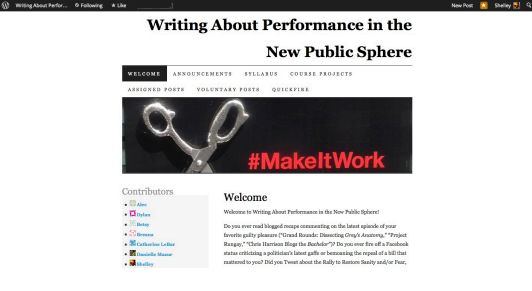
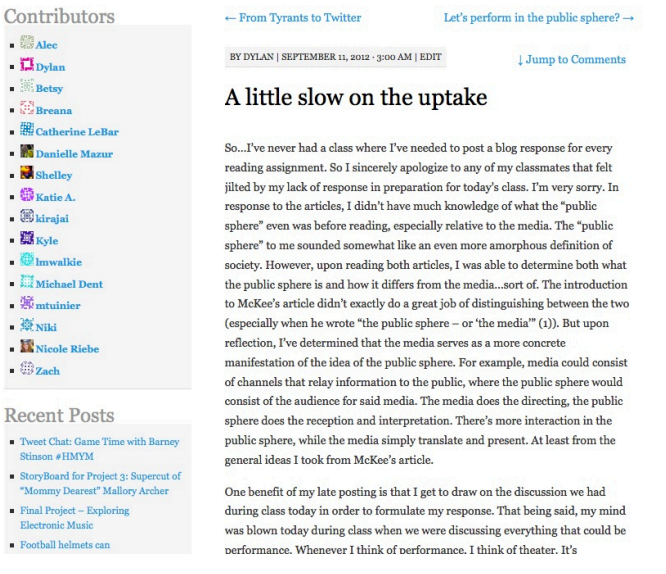
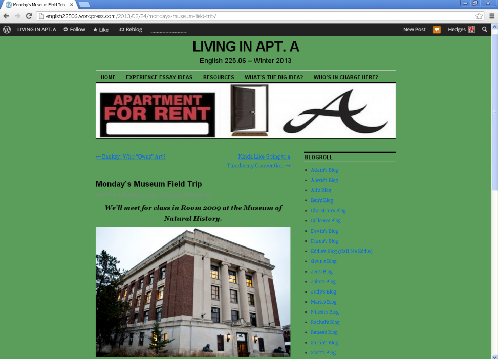
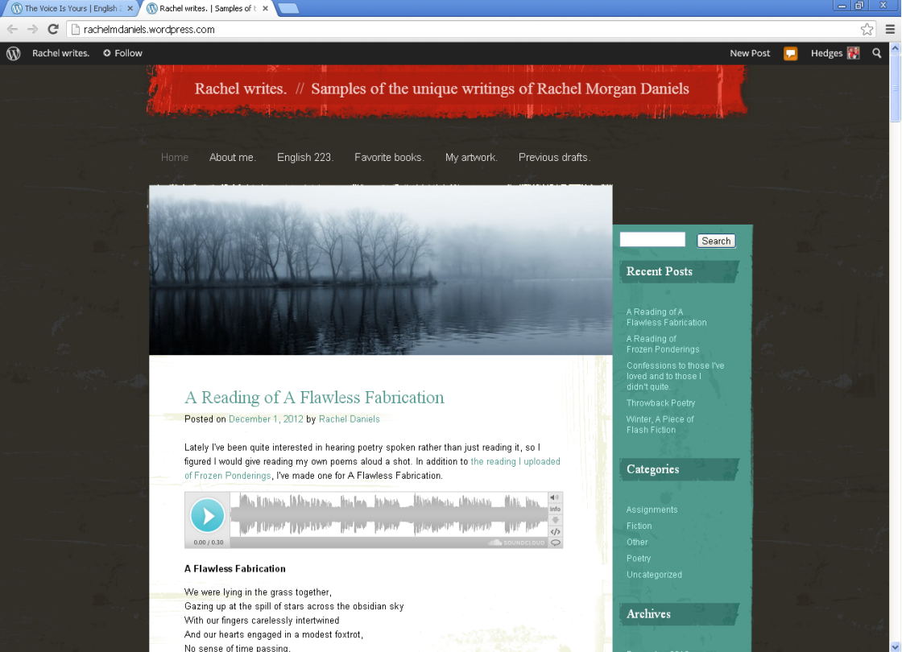

Using Blogs in the Classroom
Overview
Blogging can improve students’s writing skills and build their confidence as writers. By blogging, students can take ownership of their writing, become better observers of other's writing, and develop a more immediate and powerful understanding of audience. Blogs encourage experimenting and risk-taking, seriousness and play, and they foster an increased awareness of private and public writing. Blogging blends both the freeing aspect of short pieces that can be written in a relatively low-stakes environment with the sense of claiming one’s own voice and learning how to develop analysis and articulate ideas to a larger public. Guided by clear expectations of what is required in a class blog, students can see their writing develop over the course of the term. This handout describes strategies for using blogs as a writing tool in the classroom.
Table of Contents
- General Consideration
- Empowering Students
- Possible Uses for Instructors
- Poosible Uses for Students
- In Practice: Choosing a Platform
- A Word About WordPress
- Private, Classroom-Only, or Public
- Class Blog and individual Student Blogs
- Resources
General Consideration
Although at first it may seem somewhat daunting when considering the perceived technical skills involved, using blogs in the classroom can be very rewarding. The learning curve is not as steep as you may imagine, and many resources for instructors(see Tech Support section below) exist on campus. Also, some students when learning to navigate the platform initially may resist blogging. But most students change their minds as they begin to blog.
Empowering Students
Students are used to writing and communicating in the digital landscape whether it be Twitter, FaceBook, Tumblr, or email. While reading their fellow student's blogs and comments, and responding online with their own comments, students recognize the value of clarity and what makes for strong and engaging posts. Students have the opportunity to practice writing and analytical skills in their own blogs that will transfer into essays and other writing endeavors. Students are able to see their own writing as something “real” with a practical application. Creating a blog can be a bridge for students between the familiar digital world and what is being asked of them in academic essays, projects and other university-based assignments. Blogging can be seen as a gateway experience for students who will likely be using digital technologies and media in their future endeavors regardless of their discipline.
Possible Uses for Instructors
You may use blogging for:
- communicating announcements and assignments in a format that students may perceive to be more “friendly” than CTools
- sharing instructor-generated exercises or prompts
- Community building
- creating a public place where student work can be “published”
Possible Uses for Students
Students may use blogging for:
- responding to readings
- maintaining a writer’s notebook or journal
- posting personal, reflective, exploratory, or open entries(campus observations, “where I’m from,” pictures from home, or favorite book or piece of writing)
- sharing student-generated research or links to class-related articles
- exploring visual rhetoric
- practicing writing
- developing voice
- working on titles, conciseness
- considering tone
- brainstorming, drafting, facilitating peer review
- creating a showcase for final projects
- crafting an on-line image or presence
In Practice: Choosing A Platform
Several user-friendly blogging platforms are commonly used in classrooms. No one platform is better suited to a specific discipline. Mostly the choice depends on your comfort level and personal preference when trying out each platform. For example, Tumblr (tumblr.com) works well for sharing images, quotes or brief chunks of text, or consolidating and linking to other sites. Google’s Blogger (blogger.com) is one of the flagship blogging platforms; it is intuitive and easy to start up, and allows for flexibility with color palettes and multiple fonts. Blogger and WordPress are both supported at the University by
Instructional Support Services (ISS), the Language Resource Center (LRC) and MLibrary’s Knowledge Navigation Center (KNC).
A Word About WordPress
WordPress (wordpress.com) is an all-purpose platform with multiple free design templates (“themes”) and high capacity for text, images, and video. Faculty and students appreciate the extensive how-to support features and video tutorials available on the WordPress site. If you are considering what platform to use in your classroom, the ISS Learning Technologies & Consulting Group (ISS-LTC) offers this advice: “WordPress is the most commonly used content management system (CMS) in the world, so there's a fairly good chance that students will use it again later in their lives, for blogging or just hosting a website of any sort. Both Blogger and WordPress allow for text, images and video; for instructors, a better distinction might be that WordPress allows for sorting posts by author, which Blogger doesn't (currently).”
Both the ISS-LTC and the KNC are able to provide support to faculty as you prepare to teach blogging and other new media; both also are available to work with students in an instructor’s classroom, workshop or computer lab settings. For more information, please see the Tech Support section below.
For additional support, access the following documents: Supplement 1: “Using WordPress”
(Lauren Atkins, Instructional Technology Consultant) and Supplement 2: “Blogging Basics”
(Charlotte Boulay, creator of Sweetland’s “Rhetoric of Blogging” course).
Private, Classroom-Only, or Public
You may find it useful to talk with a consultant at ISS-Learning Technologies & Consulting Group (ISS-LTC) about what might best fit your classroom needs when deciding about whether to make classroom blogs private, classroom-only or public (and to what extent public—for example, searchable by search engines or not). Please see Tech Support section below for more information. A class blog or individual student blogs could be completely private and classroom-based, with the only users and viewers being you as the instructor and your enrolled students.
A class blog also may be completely public and accessible to anyone online. The benefit of making a site public is that it creates a broader sense of audience and of participating not only in the university community but perhaps a global community as well. However, if the site is public, be aware of copyright issues when posting articles or class readings; CTools is a more secure location for sharing copyrighted material.
Generating and Facilitating Effective Blog Conversations
- A strong blog discussion relies on clear expectations about the purpose of the blog and the nature of student participation on it, judicious instructor participation, a sense of interpersonal community, and strong blog assignments/prompts. What follows is a little advice about each of these components:
- Clear expectations: Students thrive most in blog conversations when they understand from the beginning what the purpose of the blog is (i.e. what they’re meant to achieve/learn from their participation in the conversations there) and what your expectations for strong posts and useful comments are.
-
- It’s a good idea to talk with your students about what you want to achieve on the blog.
- Providing clear guidelines (whether you create them yourself or in collaboration with your students) about what makes an excellent post or comment goes a long way toward generating useful conversations.
- Rubrics have the benefit of laying out your expectations as well as helping students assess their own work, especially if you’re grading the blog.
- Strong Blog Assignments/Prompts: Decide how you want the students to use the blog, and then design the assignment, and/or individual prompts, accordingly. Your prompts should address matters of both content and timing:
-
- Content - Do you want them to be using the blog to chronicle their learning in the course, like handwritten learning journals have done in the past? Do you want them to be logging their research? Sharing resources with the class or a peer group? Posting conversation questions? Conducting close readings on small portions of the texts? Something else? Be explicit. Even if you want to give them plenty of leeway to determine what to say, you need to be clear about what they’re aiming to accomplish. For example, if you want them to use the blog to reflect on course readings, it’s probably not enough to say that. It’s more helpful to give them some guidance on how to reflect. Do you want their gutlevel reactions? Do you want them to analyze the rhetoric? Do you want them to make connections between the reading and their lived experience?
- Timing – Do they need to post weekly? Bi-weekly? Some other interval? Or do they just need to post a certain number of times? Do they need to comment on peers’ posts? If so, how many, and how often? If you are having them comment on each others’ posts, it can be helpful to stagger when they post versus when they comment. That way they can focus on taking one role at a time. This method also has the benefit of pacing for you as a reader. One way to facilitate this is through blog groups, which are discussed below.
- Instructor Participation: A good balance between facilitating and controlling the blog can motivate your students to participate most productively. Research shows that instructor prominence or high activity can stifle student participation.
-
- Let your students know ahead of time what your level of visibility on the blog will be (and why!) as well as how much directing you’ll do while you’re there.
- If you check in regularly and respond in positive ways (“cheerleading” strong posts and following up with questions that encourage ever deeper thought), your students will be more likely to engage with purpose.
- Step in enough that students know that you’re following and valuing their work, but not so much that they rely on you for keeping the conversation going.
- Interpersonal Community: A sense of shared purpose and mutual care can mean the difference between a lackluster, superficial conversation and a dynamic interactive space.
-
- Having students address each other by name in their posts and comments can instill a sense of responsibility to and familiarity with each other.
- Invite them to each cultivate their own voices on the blog, leaning into their individuality and personality while engaging with the material.
- Blog Groups - Many instructors assign small groups of students (3-4 in a smaller class, a maximum of 10 in a larger class) to blog groups who post and comment for each other for a set period of time—sometimes all semester, sometimes for the length of a unit, etc., depending on your course structure and preference. This has the benefit of helping students get to know each other’s ways of thinking, writing style, and learning processes in more detail. It also helps to reduce the potential stress for you of responding to the entire class’s posts every time, while ensuring that all students always receive some comments on their posts.
Class Blog and Individual Student Blogs
There are many ways to use blogs in the classroom. Some instructors choose to create a class blog that all enrolled students can contribute to by adding comments or by making individual posts. Here is a screenshot of a class blog from WRITING 200 – winter 2013.

A class blog can:
- unite all class announcements, assignments, and exercises in one space or hub with the instructor as the operator of the site
- provide a workspace for students to share thoughts, drafts, or projects in a relatively low-stakes environment
- provide a venue for quieter students to “speak” and contribute ideas
Below is an example of a student contributor “post” from WRITING 200 responding to the instructor’s prompt.

Some instructors create a class blog and ask that each student also create an individual blog. Here is an example of a class blog with individual student blogs from English 225 – winter 2013.

An instructor’s class blog can:
- serve as a focal point for writing exercises, models and prompts
- communicate useful classroom information, announcements, online links and readings
- include links to all the individual student blogs in a comprehensive list so that students can easily find each other’s sites for reading, commenting or peer-reviewing
Here is an example of a student blog from English 223:

A student blog can:
- provide a workspace for assignments, brainstorming, process-oriented activities and questions of design and visual rhetoric
- help students develop a sense of audience, voice and ownership
- serve as an archive of the writing process by storing drafts and works in progress
- display and publish final polished projects and new media projects
For further reading on the uses of blogging and on how individual writers can contribute to the blogosphere in original ways, consult Supplement 3: Andrew Sullivan’s Why I Blog and Supplement 4: Rebecca Blood’s chapter "Finding Your Voice.”
Setting Up Individual Student Blogs
It may be helpful for you to create a course blog before class begins; you then can use your site as a model as well as for other pedagogical purposes. Here are three possible options for set up:
- before class meets, send material (Supplement 1: “Using WordPress”) to the class and ask that students set up their accounts and sites before the first class session [For more information, consult Supplement 5: Getting Students Ready to Blog.]
- during class time, teach the students how to set up the site
- during class time or outside of class time, invite ISS-LTC or KNC to hold a workshop for creating a blog
Tech Support
You will find a broad range of support exists for faculty choosin to include blogs in their courses. Some important university resources are explained below.
ISS-Learning Technologies & Consulting Group (ISS-LTC) (lsa.umich.edu/iss)
- works with faculty individually in planning, learning, implementing or evaluating a blogging platform to prepare for integrating blogging into a class
- offers pedagogical support for course blogging projects regardless of the platform used
- holds faculty workshops with KNC
- visits classes for introduction to WordPress workshops
- hosts open WordPress labs for students with individual questions
Knowledge Navigation Center (KNC) (lib.umich.edu/knowledge-navigation-center) and Faculty Exploratory (lib.umich.edu/faculty-exploratory)
- works with faculty individually for specific classroom needs
- consults on Photoshop, GarageBand, iMovie, InDesign, and more
- hosts workshops for faculty or student classes at the KNC or Mac Lab in Shapiro (UGLi)
- manages TechDeck (http://www.lib.umich.edu/techdeck) in Shapiro (UGLi) providing tech support for students
Notes on Blogging in the Classroom
- In faculty meetings, many instructors have commented on how amazed they are about the quality of the writing and analytical thinking when students have the opportunity to use blogging as a medium. Instructors were able to see how strengths could be identified in the informal blog posts or comments and then were able to help students transfer these strengths to other academic writing. Here are several instructor comments that address the benefits of using blogs and offer thoughts about how their classroom blogging could be improved in the future.
- “It’s often very useful (not to mention a real pleasure) to read student writing in a different, more personal voice. It’s easy to see how some students are stymied by their perceived expectation of a “formal,” “academic” tone, when in fact they have a well-developed and engaging voice in the blog.”
- “One thing I learned about blogs: reading discussion blogs or class blogs are better with prompts or questions provided by me. Asking them to just write something in response to readings causes them too much and they write very little.”
- “One thing I really loved about blogs was the opportunity to have students blog about their writing process while it was going on. I had a separate blog just for blogging about process and gave them a few prompts to respond to. This really created community between students as they shared their struggles in progress. I found it was important to have a set number of blog posts required (4) and clear deadlines for completing them.”
- “I loved that students could include multimedia in their process and reading response posts. I liked when they'd post a cartoon or an image of their process along with their writing. I didn't require it, but most students took the opportunity to always post images or songs or other media.”
Resources:
-
- Andrew Sullivan, “Why I Blog,” The Atlantic, November 1, 2008
Rebecca Blood, “Chapter Two: Finding Your Voice,” The Weblog Handbook: Practical Advice on Creating and Maintaining Your Blog, 2002
- Rebecca Blood, "Weblog Ethics", The Weblog Handbook: Practical Advice on Creating and Maintaining Your Blog. Cambridge: Perseus Publishing, 2002. 114-121
- Rebecca Blood, “Weblogs: A History and Perspective,” September 7, 2000
- Rebecca Blood, “Rebecca’s Pocket: Ten Tips for A Better Weblog,”
- Charles Lowe, Purdue University, and Terra Williams, Arizona State University, “Moving to the Public: Weblogs in the Writing Classroom,” Into The Blogosphere
- Rebecca Mead, “You’ve Got Blog,” The New Yorker, Vol 76, Issue 34, p 102, November 13, 2000. Blogging 101 – An introduction to reading and writing a weblog: Blogs – anatomy, Blogs – why read, why write.
Gunther Kress, Gains and losses: New forms of texts, knowledge and learning, Computers and Composition 22 (2005) 5-22
- Meredith Badger, Royal Melbourne Institute of Technology, Visual Blogs Into the Blogosphere,
Note: Many thanks to the sources above and also to Lauren Atkins, Charlotte Boulay, Timothy Hedges, Shelley Manis, Simone Sessolo, Jamie Jones, Jennifer Metsker, Aaron Valdez and Anne Gere for content, expertise and images.
Go to page - 1
Go to page - 2